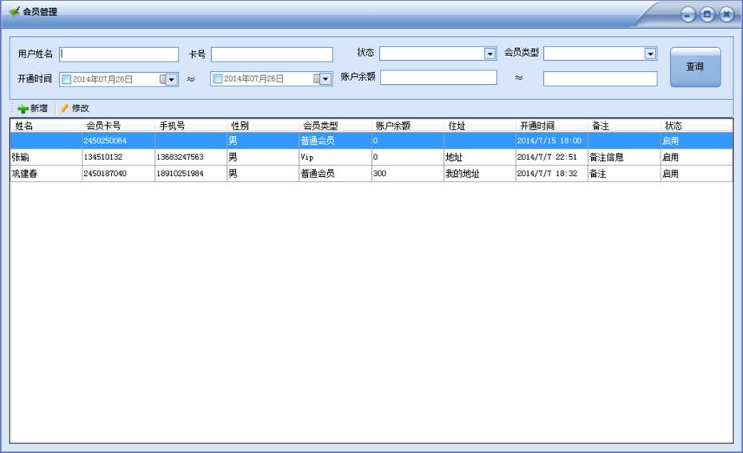
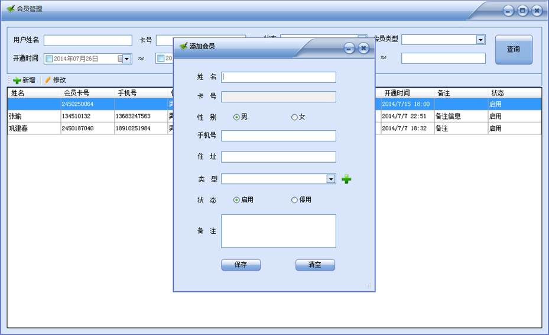
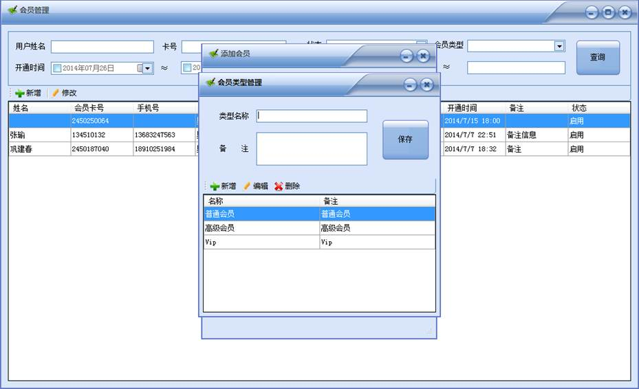
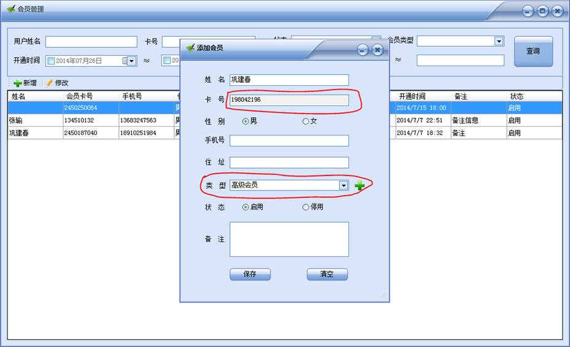

在主界面顶部点击【会员管理】菜单如下图所示：

会员管理窗口如下所示：

上面是查询功能，可以根据姓名、卡号、状态、会员的类型、开通时间、账户余额进行不同条件的查询，下面是当前系统所有的会员列表，可以通过中部的【新增】、【修改】按钮新增和修改会员信息，点击【新增】会进入新增会员的界面，如下图所示：

其中卡号不能通过手工输入，必须通过读卡器读入卡号，会员类型是指会员的不同级别，如普通会员、高级会员等，如果所需的类型不存在，可以通过后面的“+”按钮进行新增，点击“+”出现如下界面：

跟员工类型界面雷同，不再累述，新增类型之后，会自动出现在新增窗口的会员类型选择框中，如下图所示：

然后点击保存，则新增会员会出现在会员管理列表中。同样可以通过主界面的【新增会员】快捷菜单进行会员新增操作。